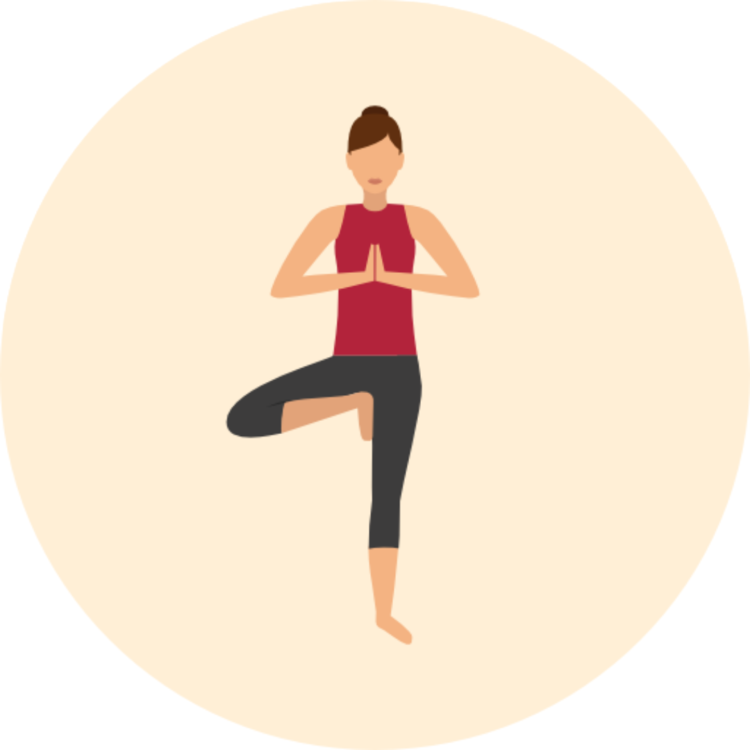

The third limb of yoga present in the Yoga Sutras is asana. The term asana is commonly translated as "pose", but contains a much deeper meaning. Asana literally translates to "to take one seat", which can refer to being here, just now, in the present moment. In the context of a dynamic practice, asana means to cultivate a steadiness and ease through movement and breath.
Different types of asana in yoga
Although there are no definitive categories of yoga postures, the following list includes some of the main physical orientations of asanas…
Standing
Seated
Supine
Twisting
Balancing
Backbends
Forward bends
Inversions
Standing postures are used to build strength and flexibility throughout the entire body.
Mountain Pose
Seated asanas tend to be energetically grounding and focus more on stretching than strength.
Easy Pose
Supine poses are done lying down on your back. They are calming and release stress.
Savasana
Twisting postures release tension in the spine and release tension from deep within the body.
Triangle
Balancing yoga postures are usually done standing on one foot and require stability and core strength.
Tree Pose

Backbends stretch the spine, release tension from the lower back and help to improve posture.
Wheel Pose
Forward bends bring the front of the upper torso closer to the lower body. They release tension in the entire back side of the body.
Forward Fold
Inversions are poses where the head is below the level of the heart and hips. They contribute to mental-clarity and improve your mood.